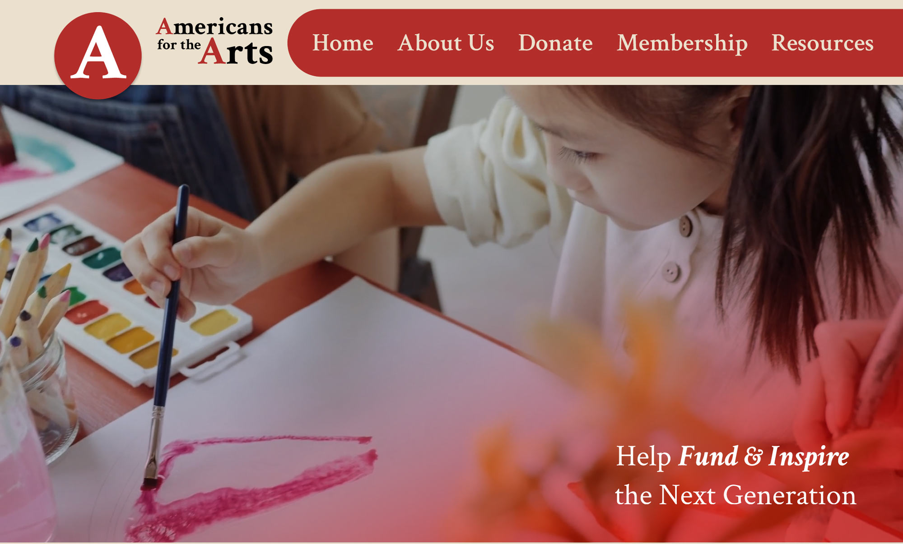

Design Brief
Overview
Americans for the Arts is a nonprofit that supports art education for students across the United States. This redesign modernizes the site, improves usability, and provides clearer access to resources, funding, and community programs for educators.
Persona
Laura Eckman — High School Art Teacher
Mrs. Eckman teaches over 200 students daily and volunteers in local arts organizations. She seeks grants, classroom materials, and ways to support student creativity.
Target Audience
Middle-aged women with a passion for the arts—especially art teachers—represent the core audience. They frequently search for funding and educational support resources.
Problem
The original website was visually cluttered, with overwhelming navigation and poor hierarchy. Teachers struggled to find grants and resources efficiently, and donation opportunities lacked visibility.
Project Goals
- Simplify navigation and improve user flow
- Highlight student artwork and impact stories
- Modernize branding for a strong national identity
- Increase clarity around donations and membership
Research Insights
Competitor analysis revealed extremes in design styles—either overly minimalist or overwhelmingly maximalist. Americans for the Arts had a maximalist, cluttered layout. Reducing menu items and simplifying the structure became a key focus.
Branding System
Old Branding
The old identity did not match the organization's modern American theme or align with their current color scheme.
New Branding
The redesigned branding uses an Americana-inspired palette and school-based typography like Crimson. The updated logo removes unnecessary elements for a cleaner digital presence.
Color Palette
#EBE0CD #72250F #B32E2B #476388 #191C2F
Homepage Redesign
A large hero image featuring student artwork creates a strong visual focal point. The donation button is now prominently placed, while card-based sections organize key resources in a simple, minimalistic layout.
Key Features
- Hero area showcasing student creativity
- Streamlined card sections for grants and programs
- Improved hierarchy and readability
Mobile-First Approach
Designing mobile-first ensured clarity and accessibility. A sliding hamburger menu keeps the homepage clean while maintaining full navigation options.
Reflection
Learning Moment
This project deepened my understanding of UX research, wireframing, and content structure. Early planning proved essential for a more intentional design.
Impact
The redesign makes resources easier for teachers to access and strengthens community engagement, ultimately supporting arts education nationwide.
Future Improvements
Possible enhancements include state hover effects for the interactive map, stronger visual feedback, and a global search feature for quick navigation.